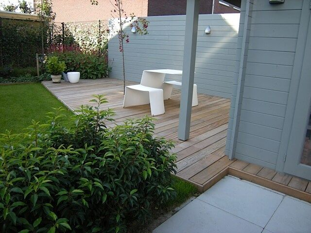
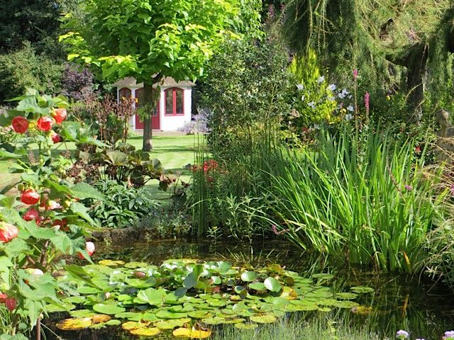
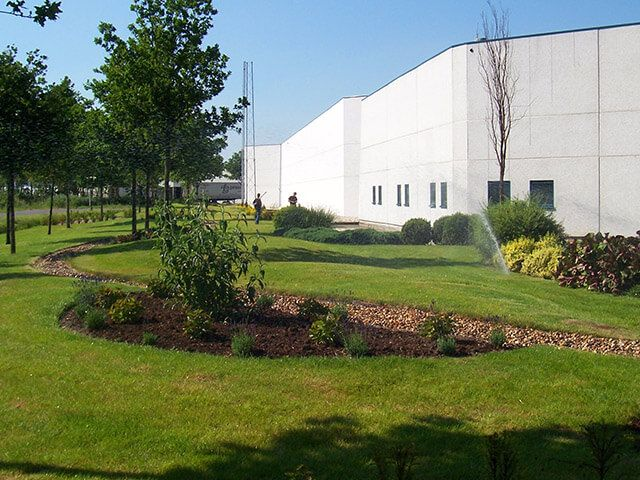

Tuinaanleg
Van bodemegalisering tot het aanleggen van plantenbakken en tuinbestrating. Ook schutting, overkapping, terrastegels, tuinverlichting en voortuin.
Hovenier uit Effen, werkzaam rond Breda
Wij staan voor een sfeervolle buitenomgeving die volledig aansluit bij uw wensen. Voor particulieren, bedrijven en overheidsinstellingen.


Van bodemegalisering tot het aanleggen van plantenbakken en tuinbestrating. Ook schutting, overkapping, terrastegels, tuinverlichting en voortuin.

U betaalt enkel voor de onderhoudsdiensten die u afneemt. Eenmalig herstel of jaarrond onderhoud, beide kan. Ook boomverzorging.

Advies over welke planten het best in uw tuin passen, op basis van tuinligging, budget en uw groene vingers. Heeft u een idee voor een nieuwe indeling? Wij bespreken het graag.

Een bedrijfstuin is een prachtig visitekaartje en draagt bij aan het werkplezier. Groenvoorziening, kantoorbeplanting en bloembakservice, in de lente fleurig en in de herfst wintergroen.